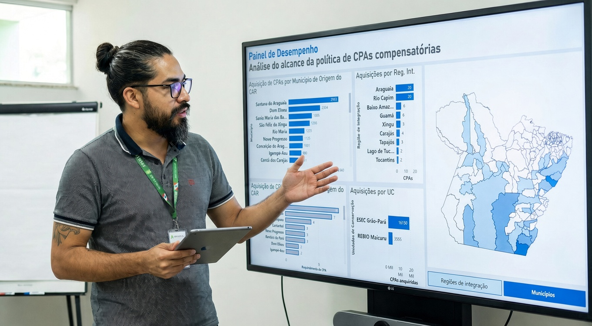
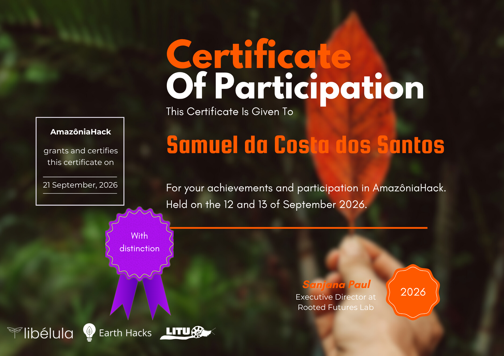
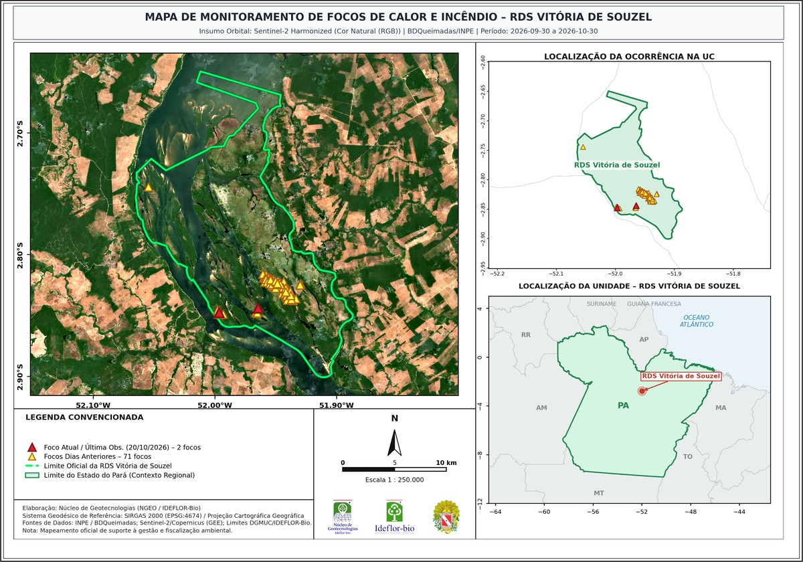

Trajetória & Filosofia
Sobre Mim

Atuo na convergência entre gestão operacional, engenharia de dados e desenvolvimento de software. Acredito que sistemas complexos, sejam governamentais ou privados, devem operar com eficiência máxima através da tecnologia certa. Minha especialidade está em diagnosticar ineficiências de ponta a ponta e construir soluções sob medida para resolvê-las.
Comprovada no setor público, essa abordagem transformou rotinas morosas de análise técnica em processos automatizados de poucos minutos, otimizando recursos e acelerando entregas. Essa lógica orienta qualquer projeto: automatizar o repetitivo, estruturar bancos de dados complexos e transformar inteligência espacial em interfaces interativas claras. Minha entrega é prática e orientada a impacto real, seja criando ferramentas em Python/QGIS, modelagens de sensoriamento remoto ou aplicações web completas.
Carreira & Liderança
Experiências Profissionais
Coordenador de Geotecnologias
Instituto de Desenvolvimento Florestal e da Biodiversidade do Estado do Pará – IDEFLOR-Bio
Desenvolvimento de soluções inovadoras em análise, interpretação e visualização de dados espaciais para a gestão estratégica de Unidades de Conservação.
Analista de Dados
Secretaria de Estado de Meio Ambiente e Sustentabilidade | SEMAS
Desenvolvi soluções estratégicas para integrar ciência de dados e geoprocessamento, suportando a gestão ambiental e a tomada de decisões. Criei dashboards interativos e relatórios dinâmicos.
Técnico em Gestão de Meio Ambiente
Secretaria de Estado de Meio Ambiente e Sustentabilidade | SEMAS
Atuei na análise e gestão de processos ambientais, desenvolvendo habilidades em cartografia e geoprocessamento. Participei de mutirões que aceleraram a validação de imóveis rurais.
Técnico em Edificações e Planejamento Urbano
Secretaria de planejamento - Prefeitura Municipal de Tracuateua
Desenvolvi e gerenciei projetos arquitetônicos e urbanos, combinando habilidades técnicas com visão estratégica. Projetei captação de recursos estaduais e federais.
Especialista Ambiental
Gestão Ambiental - BR-230/422/PA
Atuei na manutenção da conformidade ao Programa Básico Ambiental (PBA) durante obras de pavimentação. Monitorei a execução de medidas mitigadoras e elaborei relatórios técnicos.
Pesquisador Bolsista de Mestrado
Laboratório de Cartografia, Geoprocessamento e Modelagem - IECOS/UFPA
Pesquisa sobre contaminação de águas subterrâneas com métodos geofísicos, análise físico-química e microbiológica. Identificação de áreas vulneráveis e desenvolvimento de metodologia integrada.
Técnico em Edificações
Secretaria de Obras, Prefeitura Municipal de Tracuateua
Acompanhamento de obras públicas, garantindo a conformidade com os projetos e a eficiência no uso de materiais. Realizei leitura, modelagem e levantamento de projetos arquitetônicos.
Formação Acadêmica
Educação
Mestrado em Biologia Ambiental
Universidade Federal do Pará
jan de 2016 - jun de 2018
Foco em Oceanografia e Gestão Costeira. A dissertação investigou a contaminação de águas subterrâneas combinando métodos geofísicos (GPR e Eletromagnético) com análises físico-químicas.
Especialização em Geoprocessamento e Solos
Universidade Federal Rural da Amazônia
jan de 2024 - out de 2025
Integração de Ciência do Solo com Geotecnologias. Ênfase em Pedometria, Geoestatística e Machine Learning com R. TCC focado na dinâmica de manguezais usando séries temporais de NDVI e algoritmo BFAST. (Nota: 9,5)
Especialização em Data Science
UNAMA
abr de 2023 - set de 2023
Ciclo completo dos dados: da engenharia à visualização. Aprofundamento em Estatística, Machine Learning e Deep Learning para tomada de decisão estratégica. (Nota: 9,45)
Tecnologia em Gestão Ambiental
IFPA
set de 2011 - out de 2014
Base sólida em Ecologia e Legislação, com forte aplicação de Geotecnologias (Sensoriamento Remoto/SIG) para manejo de Recursos Hídricos e Recuperação de Áreas Degradadas.
Especialização em Educação Ambiental
Faculdade Pan Americana
ago de 2015 - nov de 2016
Abordagem das dimensões social e legal da sustentabilidade, focando em legislação, áreas protegidas e gestão participativa de ecossistemas costeiros.
Técnico em Edificações
IFPA
jan de 2012 - jul de 2013
Fundamentos de engenharia civil com competências em Mecânica dos Solos, Topografia e CAD, voltados ao planejamento e orçamentação de obras.
Portfólio Selecionado
Meus Projetos
Explore meus trabalhos em ciência de dados, geoprocessamento e desenvolvimento

GeoVicinal (Projeto Selecionado - AmazôniaHack 2026)
Roteamento topológico offline sobre a malha de estradas vicinais não oficiais da Amazônia (PrevisIA/Sentinel-2). A solução resolve o problema de mais de 1.800 componentes desconexos e elimina "pontes fantasmas" sobre rios através de validação hidrográfica restritiva com STRtree (SIGERH-PA), serializando o grafo em binário compacto CSR (29,3 MB) para busca Dijkstra client-side sem internet.

Pórtica — Calculadora Estrutural NBR 6118:2023
Software desktop livre para cálculo e dimensionamento de vigas de concreto armado conforme a ABNT NBR 6118:2023. Realiza verificação de flexão (seções R e T, armadura simples e dupla), cisalhamento (Modelo I), armadura de pele e ELS. Conta com parser para importação direta de diagramas e envoltórias do FTOOL, detecção automática de seções críticas governantes, geração de relatórios técnicos completos em PDF (com campos de ART/CREA) e exportação de desenhos das seções em DXF para CAD.

Cartografia de Queimadas e Severidade em UCs do Pará
Pipeline automatizado em Python, Google Earth Engine (GEE) e Google Colab para monitoramento contínuo e mapeamento institucional de focos de queimada (BDQueimadas/INPE) e severidade espectral (Sentinel-2 Harmonized) nas Unidades de Conservação estaduais do Pará. Gera pranchas de alta precisão A4 Paisagem (300 DPI) em 3 variantes (Cor Natural, Falsa Cor SWIR e NBR), cobertura orbital 100% ajustada ao viewport e emissão automatizada de relatório técnico institucional (.docx) para subsídio tático à fiscalização.

Downscaling Térmico de LST — IDEFLOR-Bio
Fluxo de thermal sharpening que desagrega a Temperatura da Superfície Terrestre do MODIS (1.000 m) para a escala de paisagem, usando preditores multiespectrais Sentinel-2 (NDVI e bandas de reflectância) calibrados por Random Forest e interpolação espacial dos resíduos para conservação estrita do gradiente térmico. Interface interativa para seleção de Unidades de Conservação, concessões florestais e contratos de transição do Pará.

Super-Resolução Sentinel-2 (ESA OpenSR)
Ambiente de super-resolução espacial por difusão latente (modelo LDSR-S2, iniciativa ESA OpenSR) que eleva as bandas B02, B03, B04 e B08 do Sentinel-2 de 10 m para 2,5 m (4x), integrando Google Earth Engine e inferência PyTorch/CUDA. O processamento por janelas deslizantes de 128×128 com ponderação Hanning evita esgotamento de VRAM e suprime descontinuidades no mosaico final, exportando GeoTIFF georreferenciado.

Cartografia Temática — NGEO/IDEFLOR-Bio
Catálogo digital de malhas territoriais, cartas temáticas e produtos cartográficos do Núcleo de Geotecnologias (NGEO) do IDEFLOR-Bio. Acervo em dados abertos governamentais, georreferenciado em SIRGAS 2000 (EPSG 4674) e projetado em UTM 21N/21S/22N, com versões para plotagem em PDF (ISO A0/A1/A4) e matriciais JPEG/PNG, organizado por Gerências Regionais.


Visualizador Geoespacial – IDEFLOR-Bio
Aplicação web para visualizar, filtrar e exportar camadas geográficas (UCs, TIs, Quilombos, Municípios etc.).
Scrollytelling – UCs do Pará
Narrativa geoespacial por rolagem das 29 Unidades de Conservação Estaduais do Pará (1989–2023), com mapa Leaflet sincronizado ao texto, HUD dinâmico com área e hectares acumulados, filtros por década, tipo e grupo, linha do tempo com 15 marcos clicáveis e modo bottom sheet em telas pequenas.

Painel de Desempenho: CPAs Compensatórias
Monitoramento da política de Cota de Proteção Ambiental (CPA) Compensatória. Análise de aquisições por município (origem do CAR), Unidade de Conservação e Região de Integração.

Auto Review R
Análise automatizada de publicações científicas em R, identificando tendências e padrões em revistas acadêmicas.


Sprint Kanban Template
Sistema completo de gestão ágil com Kanban interativo e salvamento automático via GitHub API. Deploy automático no Vercel a cada push.
Doom Fire Algorithm
Implementação do algoritmo clássico de fogo do DOOM (1993) em Python. Simulação de propagação de calor com visualização numérica e gráfica.

Análise Geoestatística com R
Krigagem espacial de pH da água do solo com ajuste de semivariograma e mapeamento temático.

Super-Resolução Sentinel-2
Geração automatizada de imagens Sentinel-2 em 1m/px com seleção baseada em nuvens via Earth Engine.


Download de Imagens Landsat e Sentinel
Notebook automatizado para aquisição de imagens Sentinel-2, Landsat, CBERS-4A e SPOT 2008 sobre áreas definidas por shapefile, com composição, máscara de nuvens, divisão automática em tiles e exportação em GeoTIFF para o Google Drive.

Sentinel Time Viewer – Swipe Interativo
Aplicação em GEE para comparar imagens multitemporais Sentinel-2 utilizando a ferramenta de "Swipe" interativa. Permite avaliar mudanças ambientais em duas datas diferentes lado a lado.

GeoVisor Belém – Visualizador Interativo
Aplicação web para visualização interativa de bairros e logradouros em Belém/PA, com busca por endereço, upload e download de camadas geográficas.

Relatório de Iniciativas da DIGEO
Painel com dados de mutirões, contratos e municipalização do CAR pela DIGEO.

Visualizador de Viveiros - IDEFLOR-Bio
Aplicativo web interativo desenvolvido para o IDEFLOR-Bio, com objetivo de visualizar e pesquisar informações geoespaciais sobre viveiros de mudas no Pará. O sistema, criado em atendimento ao processo 2025/2460154, permite explorar dados de viveiros, municípios, Unidades de Conservação e regiões de integração.

Portfólio de Geoprocessamento e Cartografia
Showcase de projetos profissionais em cartografia temática, análise de terreno, classificação de uso do solo e georreferenciamento utilizando QGIS, SAGA GIS e Python.

Análise de Manguezais (PA-458) com NDVI & BFAST
Avaliação da dinâmica temporal de manguezais na rodovia PA-458, combinando séries temporais de NDVI e o modelo BFAST para identificar rupturas estruturais (2019-2024).

ArchiSearch: Semantic Search IA
Sistema que utiliza Inteligência Artificial (CLIP) e busca vetorial (FAISS) para localizar referências arquitetônicas locais (milhares de imagens) através de contexto semântico e similaridade visual, resolvendo o problema de organização rígida de pastas.
Credenciais & Especializações
Certificações
Stack Técnica
Tecnologias & Ferramentas
Linguagens
Frameworks
Ferramentas
Conexão & Parcerias
Vamos Conversar?
Estou sempre aberto a novas oportunidades e colaborações